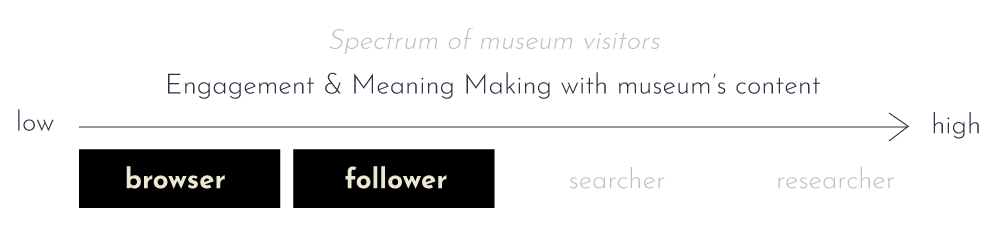

Create your masterpiece at one of the art making stations
CREATE
Tangible User Interface in museums
CREATE is a tangible user interface system that aims to add a personal touch to the visitors’ museum experience. Through various art-making stations, visitors can create their own masterpieces, discover artworks in the museum that resemble their creations and curate their own museum journey.
Key Words
Tangible User Interface, Personalised user journey, Art making
Target Audience
"Browser" and "Follower" spectrum of museum visitors

Goal
To increase relatability of the works and to create a deeper level of engagement and meaning making for them
Year of project
2019
Designed with Lim Shi Yun and Luna van den Bergh
What I did
- Market & Audience Research
- User Interface Prototype
- User Testing
- Storyboarding, Filming, Editing
Skills used
- Software: Adobe Illustrator, XD, After Effects, Premiere Pro